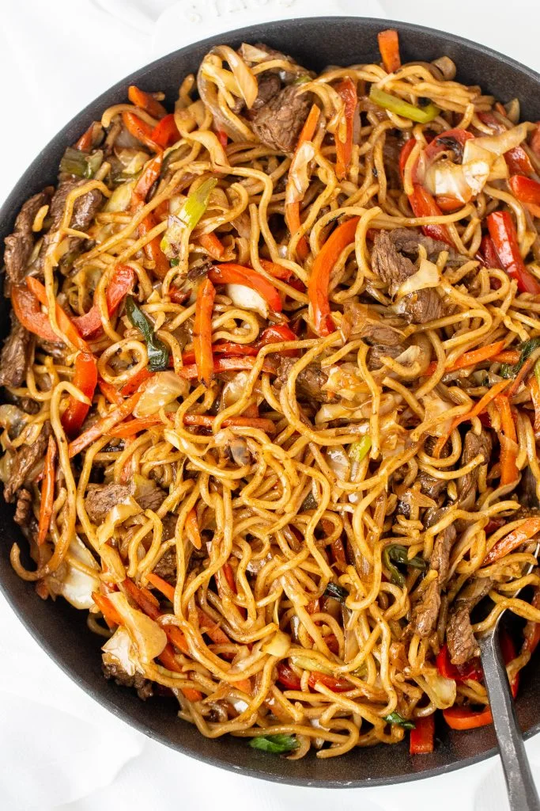

Home page
Yakisoba

Yakisoba (焼きそば) is a classic Japanese street food that is cooked on a large iron grill. Yakisoba consists of the word Yaki, meaning grilled or fried, and Soba, meaning noodles. Yakisoba Sauce is very easy to prepare. All of the ingredients can be purchased in most grocery store.
Ingredients
- 1 medium onion
- 1/2 small cabbage
- 1/2 bunch green onion
- 2 large carrots
- 1 red bell pepper
- 1 lb beef
- 16 oz Yakisoba noodles
Yakisoba sauce:
- 2 tbsp sugar
- 2 tbsp soy sauce
- 2 tbsp oyster sauce
- 2 tbsp ketchup
- 4 tbsp Worcestershire sauce
Steps
- Prepare all ingredients for the Yakisoba. Slice all vegetables into even slices. Cut beef into thin strips. Reheat Yakisoba noodles following the package instructions.
- In a lightly oiled Wok, cook all the vegetables separately on high heat until they’re golden brown. Set aside in a bowl.
- To the same Wok or a skillet, add more oil and brown the beef slices on all sides. Add vegetables to the beef mixture.
- In a separate bowl, combine together sugar, soy sauce, oyster sauce, ketchup and Worcestershire sauce.
- Pour the sauce over the cooking ingredients, let it cook together for 2-3 minutes.
- Add Yakisoba noodles to the mix, let it cook together for 5 minutes.
- Serve Yakisoba while it’s warm.